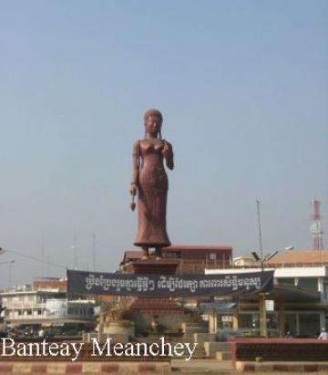

- Siem Reap
- Pailin
- Battambang
- Pursat
- Banteay Meanchey
- Oddar Meanchey
- Preah Vihear
- Kampong Thom
- Kampong Chhnang
- Kampong Cham
- Stung Treng
- Ratanakiri
- Mondulkiri
- Kratie
- Tbongkhmum
- Preyveng
- Svay Rieng
- Kandal
- Phnom Penh
- Takeo
- Kampong Speu
- Kampot
- Kep
- Preah Sihanouk
- koh kong


Banteay Meanchey Travel Guides
General Information
Banteay Meanchey is a Cambodian province in the northwest of the country, and its capital is named Sisophon. The town of Sisophorn is today a charming, quiet place that only gives hints to its turbulent past upon closer examination. Like Siem Reap and Battambang Provinces, control of the province has changed hands many times between the Thais and the Khmers in the more distant past, and the Khmer Rouge and central Phnom Penh government in recent decades. With the final demise of the Khmer Rouge (locals, however, firmly believe the Present national reconciliation only the Khmer Rouge trick), the province and towns are striving to rebuild their culture and economy.
It's very friendly place with the locals genuinely happy to see foreign faces and the stability that it implies. Normally just a passing-through spot on the way to the border, or between Battambang and Siem Reap, the area has a few sights that warrant a visit, such the Banteay Chhmar temple ruins, the only other Khmer temple ruins besides the Bayon (Angkor) and Preah Khan ( Preah Vihear Province ) that features the famous four-faced monuments.
This area was part of the extensive Khmer empire, with its most notable remains the Banteay Chhmar temple (built in 12th and 13th century) in the north of the province. In the 17th century the Siam took control over Cambodia, and made the area of the modern province part of Sisophon Province. In the year 1907 the Siam had to cede control to the French, and the area was then included into Battambang Province. In 1988 the province Banteay Meanchey was split off from Battambang.
Cambodia Travel from Banteay Meanchey Province to Battambang Province
Geography
Banteay Meanchey is located in the Northwest of Cambodia. It borders with Thailand to the west and North, with Oddar Meancheay to the North, with Siem Reap to the East and with Battambang to the South. The town of Sisophorn is about 359km from Phnom Penh via national road number 5.
One of the most known places in that province is Poipet, a town on the Thailand/Cambodia border. It?s the key crossing point between the two countries, and also extremely popular as a gambling destination with lot?s of casinos (gambling is popular, but illegal in Thailand). There is a strip of casinos, guesthouses and hotels between the Thai and Cambodian passport control counters, enabling Thais to gamble in Cambodia without needing to go through Cambodian immigration. Poipet is adjacent to the city of Aranya Pratet on the Thai side of the border.
The province is mostly covered by extensive lowlands, with a few uplands to the North and East (all in all around 6,679 sq/km surface). The main rivers are the Mongkol Borei River and the Sisophon River.
Population
The total population is 816,382 or (5.242%) of the total population 14,363,519 in Cambodia (2007, provincial government data) with a growth rate of 5.93 %, which is consisting of 402,201 male person (49.11%), and 414,181 female person (50.89%).
The above number also consists of 654, 033 person (93%), who are farmers, 8,228 person (1.17%), who are fishermen, 35,162 person (5%), who are traders, and 5,814 person (0.83%), who work as government officers.
Climate
The weather condition are as below.
Average Temperature: 30C - 33C
Rain fall: 885.30 mm/year
Evaporation: 4.41 mm/day (May - July)
3.37 mm/day ((August - October)
Humidity: Hot and Wet
Wind velocity: 3 m/s (May)
2.9 m/s (June)
2.5 m/s (July)
3.1 m/s (August) There are 3 different seasons:
- Rainy season: June - October (32c)
- Cool season: November- February (>27c)
- Hot season: March- May : Temperature: from 27c -34c